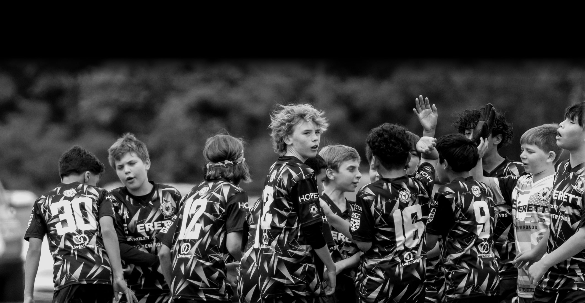
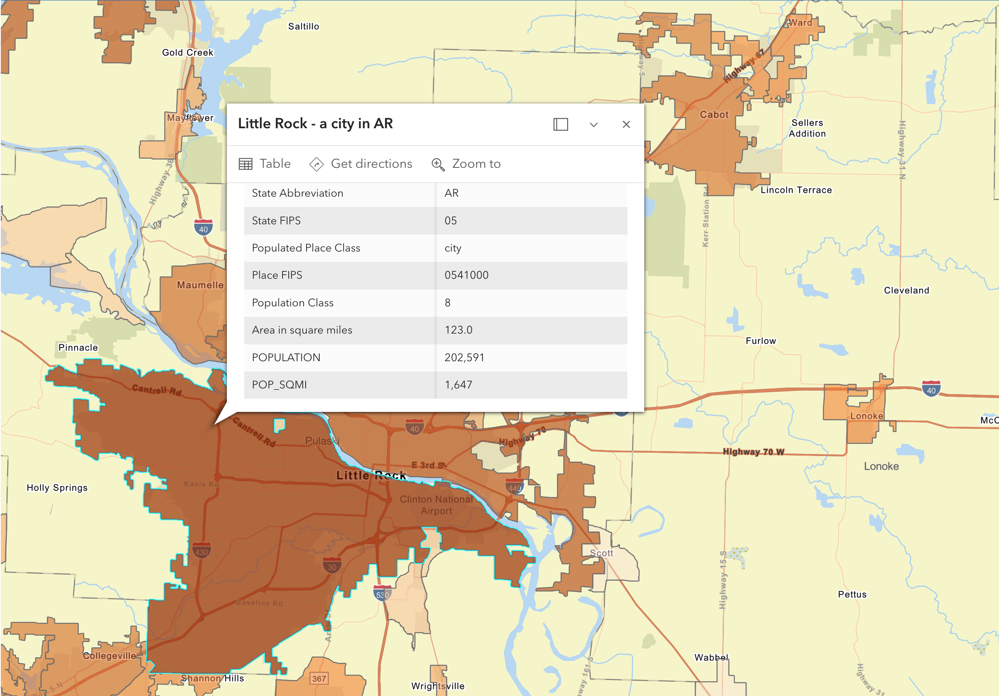
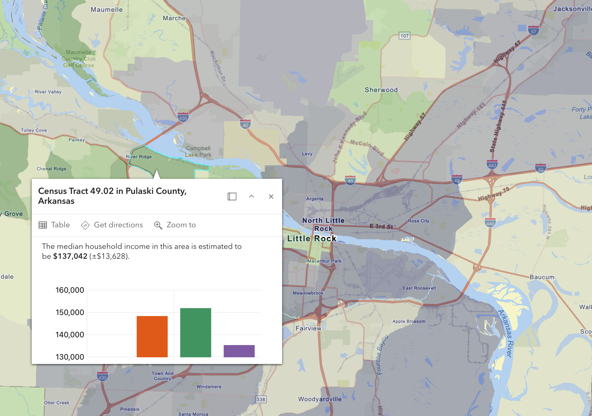
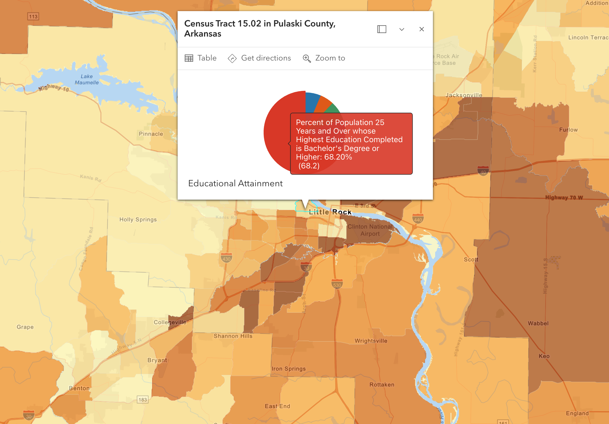
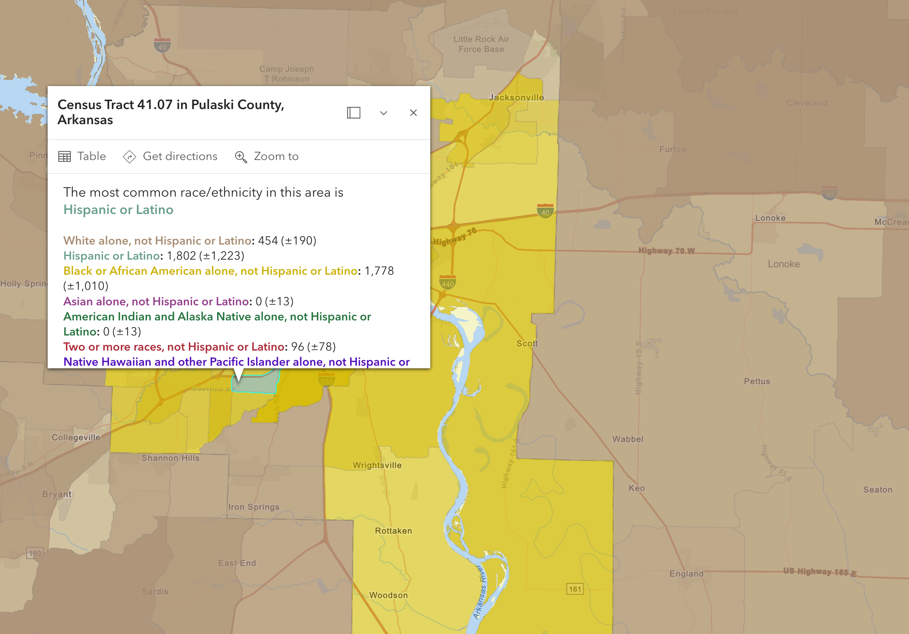

Every U.S. soccer league has a metro-size profile they're hunting. Little Rock fits it. It has the population, the income base, the underserved sports-entertainment dollar, and a downtown that has spent fifteen years rebuilding itself for exactly this kind of asset.
Major League Soccer is at 30 markets. USL Championship is at 24. USL One and MLS Next Pro are filling in the remaining metros with populations between 500K and 1.5M. The smallest viable market for pro soccer is a Little Rock-sized metro. The map of every soccer-eligible city that doesn't yet have a club gets short. Little Rock is one of the only ones left.
It's not if a club gets here — it's when, and who. We're answering both.
Little Rock proper counts 202,591 residents at 1,647 per square mile — dense enough to fill a stadium and walk to it. In the highest-earning tracts, median household income tops $137,000. In the tracts closest to downtown, bachelor's-or-higher educational attainment reaches 68%. The market is diverse, urban-core, and clustered around the exact geography where a riverfront stadium would sit — the demographic profile every U.S. pro soccer league prioritizes.




Fifteen years ago, downtown Little Rock was not a place you'd build anything. Today, it is the centerpiece of the city's strategic plan. Measure 3 — the ten-year downtown revitalization initiative — has rallied the business community, civic leadership, and the mayor's office around a single vision: bring people back downtown, give them reasons to stay.
A riverfront stadium is the largest possible accelerant for that plan. Visible from the freeway. Visible from the river. A reason for 40,000 people to come downtown 18 nights a year, plus every concert and event in between.
In a metro this size, that attendance is exceptional. It tells us the sports-entertainment appetite is real — minor league soccer just hasn't shown up to compete for it.
The Razorbacks dominate the cultural calendar in season. Off-season — spring, summer, fall — there is no comparable live-sport experience in Central Arkansas. We fill that gap directly.
The Wolves Academy is already the largest in the state. The pipeline of parents, siblings, and community is already showing up to fields every weekend. A pro team gives them a club to root for.
"I went to a baseball game in St. Louis once. I didn't follow baseball at all. But the beer, the hot dog, the organ — I told everybody about it for years. That's who we're going after."
— Hayley Evans, CMOReady to talk through this in person?
— A conversation with Ron Gilmore is the next step
Schedule a Conversation